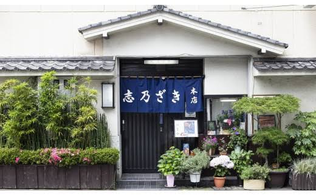
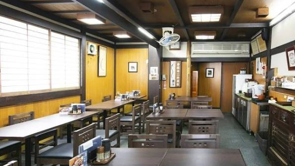
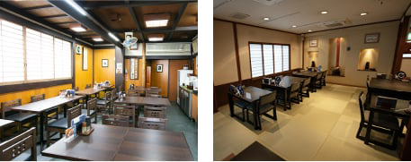
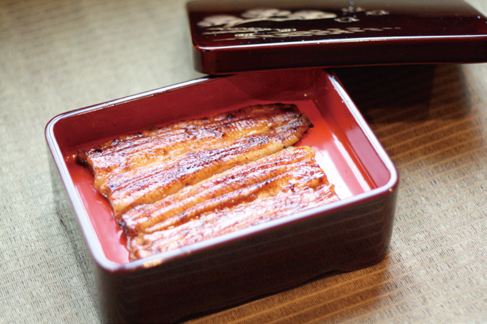
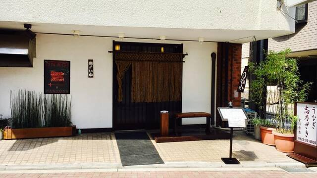
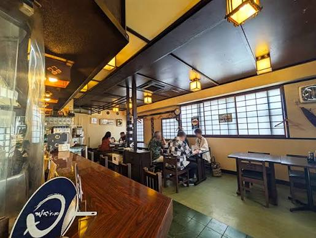
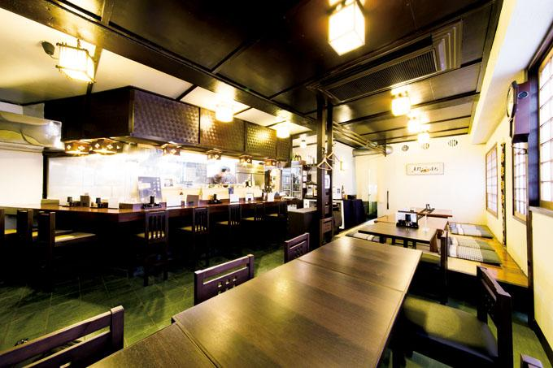
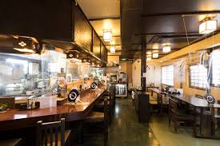

食べログから予約
八王子本店




一人前より承ります。詳しいメニューはお電話にてお問い合わせください。
本町・元横山町・横山町・大和田町・南町・新町・八幡町・八日町・明神町・平岡町・暁町・子安町・天神町・田町・小門町・南新町・三崎町・旭町・上野町・日吉町・千人町・八木町・万町・寺町・東町・中町・大横町・追分町・台町・散田町・富士見町・中野山王・中野上町・並木町・めじろ台・山田町・北野町・緑町・片倉町
吉祥寺店




一人前より承ります。詳しいメニューはお電話にてお問い合わせください。
吉祥寺東町・吉祥寺南町・吉祥寺北町・中町・吉祥寺本町・御殿山・井の頭・杉並区松庵・西荻南・下連雀・宮前・久我山